Présentation
Ce mod modifie le jeu Baldur's Gate II : Trône de Bhaal de façon à ce qu'il dispose d'animations supplémentaires de créatures et de personnages (appelées « slots d'animation » dans ce document [NdT : « emplacements » ou « index »]). Il fournit aussi un utilitaire permettant de définir automatiquement de nouveaux slots d'animation afin de les enregistrer dans le forum d'Infinity Animations. Il fonctionne ainsi comme une base de données centralisée, utilisable par quiconque souhaite ajouter de nouvelles animations de créature dans le jeu sans être confronté à des problèmes de conflits et d'incompatibilité avec d'autres mods.
Infinity Animations prend en charge les types d'animation très divers des jeux Baldur's Gate I, Baldur's Gate II, Icewind Dale I, Icewind Dale II, Planescape: Torment et Neverwinter Nights. En bonus, le mod rétablit l'intégralité des animations de personnages de Baldur's Gate I, et permet à certaines animations qui n'en avaient pas jusqu'à présent de disposer dorénavant d'un paperdoll [NdT : silhouette dans l'écran des personnages].
Point important pour les joueurs installant plusieurs mods conséquents (appelés « megamods »), Infinity Animations résout les conflits de slots d'animation [NdT : plusieurs mods utilisant les mêmes slots pour des animations différentes, le dernier installé écrase les modifications effectuées par les précédents], et rétablit les animations de base que les megamods ont modifiées.
Enfin, il comporte des composants optionnels qui introduisent de nombreuses nouvelles animations dans le jeu, ainsi que leurs jeux de sons associés (soundsets). Bien que le nombre d'animations supportées ne soit pas « infini », comme le nom du mod l'indique, il devrait toutefois être assez important pour répondre aux besoins actuels (et probablement futurs) de tout le monde.
Principales fonctions
- Rétablit les animations de personnages de Baldur's Gate I.
- Améliore la prise en charge des paperdolls pour les animations existantes.
- Ajoute des animations de jeu personnalisées pour les personnages et les créatures (dont les dragons).
- Permet d'utiliser de nombreux types d'animation (dont certains n'ont jamais été vus dans les jeux).
- Résout les problèmes d'empilement d'animation et les conflits de slots et de désignation des animations.
- Fournit un utilitaire GUI [NdT : interface graphique] pour vous aider à ajouter de nouvelles animations dans le jeu.
- Vous permet de visualiser à quel point le pourcentage de slots d'animation disponibles refuse obstinément de diminuer. 🙂
Si vous souhaitez plus d'informations sur la manière d'ajouter de nouvelles animations, veuillez consulter le chapitre Ajouter un slot d'animation de la documentation de l'utilitaire IA Reference Picker.
•HAUT DE PAGE
Compatibilité
Infinity Animations fonctionne avec BG2 : Trône de Bhaal et toutes les conversions basées sur ToB. Assurez-vous que vous avez bien installé le patch 26498 pour le Trône de Bhaal. Si nécessaire, vérifiez le fichier Readme relatif au patch dans votre répertoire de jeu et sur le site internet de BioWare.
Ce mod est également compatible avec les autres mods, dont Baldur's Gate Tutu (et EasyTutu), Baldur's Gate Trilogy et le BiG World Project.
Installez-le après la plupart des autres mods, en particulier ceux qui ajoutent des créatures ou des animations, mais avant les procédures finales de « biffing ». [NdT : archivage avec Generalized biffing]
Commencez une nouvelle partie après avoir installé ce mod, ou si vous êtes réticent(e), installez le composant « Correction des animations dans les parties sauvegardées ».
•HAUT DE PAGE
Installation
Mise en garde
Si une ancienne version de ce mod est déjà installée, désinstallez-la avant d'extraire la nouvelle. Pour cela, lancez setup-infinityanimations.exe, désinstallez tous les composants précédemment installés et supprimez le répertoire infinityanimations.
Lorsque vous installez ou désinstallez, ne fermez pas la fenêtre DOS en cliquant sur le bouton X ! Au lieu de cela, appuyez sur la touche Entrée lorsque l'invite de commandes vous le demande.
Par précaution, désactivez les antivirus ou tout logiciel résidant en mémoire avant d'installer ce mod, ou tout autre mod. Certains (en particulier avast et Norton !) ont une fâcheuse tendance à déclarer les exécutables des mods comme des faux positifs, provoquant ainsi l'échec de la procédure d'installation.
Vous pouvez extraire les fichiers de l'archive avec WinRAR, ZipGenius, ou n'importe quel autre logiciel capable de décompresser les fichiers .rar. [NdT : comme 7-Zip]
Important : Téléchargez tout le contenu dont vous avez besoin dans la section de téléchargement d'Infinity Animations de Spellhold Studios. En cas de doute, téléchargez toutes les archives (la plupart des installations de megamods les nécessitent toutes). Extrayez les archives en sélectionnant l'option « Ne pas extraire les chemins d'accès » de l'onglet Avancé de WinRAR. Assurez-vous aussi que le « Chemin d'accès de destination » de l'onglet Général se termine par /content ou /restore après infinityanimations (ils ne doivent pas comporter de sous-répertoires).
Extrayez toutes les archives dans le répertoire /content sauf IA_BG2_Restores.rar, dont les fichiers doivent aller dans le répertoire /restore. Si vous extrayez IA_Wh_Dr_Wyv_LoP.rar (à ce jour, seul le mod la Sphère Planaire en a besoin), vous pouvez supprimer le fichier The_Lady's_Shadow.rar après extraction, car il n'est pas utilisé à cause des dimensions de l'animation, trop grandes pour être supportées par le moteur du jeu.
Si vous utilisez WinZip, assurez-vous que la case « Utiliser les noms de répertoire » n'est pas cochée.
Une fois l'extraction terminée, les répertoires « content » et/ou « restore » devraient contenir une multitude de fichiers .bam, et AUCUN sous-répertoire. Le programme d'installation vous préviendra s'il vous manque des fichiers nécessaires. À ce moment, vous pourrez quitter le programme, télécharger le contenu manquant, l'extraire et relancer la procédure d'installation.
Windows
Extrayez le contenu du mod dans le répertoire du jeu que vous souhaitez modifier (BG2, BGT ou EasyTutu). Si l'extraction s'est déroulée correctement, un répertoire infinityanimations et un fichier setup-infinityanimations.exe doivent être apparus dans le répertoire du jeu. Pour installer le mod, double-cliquez sur setup-infinityanimations.exe et suivez les instructions apparaissant à l'écran.
Pour réinstaller, désinstaller ou changer certains composants, lancez setup-infinityanimations.exe dans votre répertoire de jeu.
Linux
Extrayez le contenu du mod dans le répertoire du jeu que vous souhaitez modifier.
Téléchargez la version la plus récente de WeiDU pour Linux sur WeiDU.org, puis copiez WeiDU et WeInstall dans /usr/bin. Ouvrez ensuite un terminal et allez (cd) dans le répertoire d'installation de votre jeu.
Facultatif : lancez « tolower » et répondez oui (« Y ») aux deux requêtes. Il n'est pas nécessaire d'exécuter la deuxième option (linux.ini) si vous l'avez déjà exécutée une fois dans le même répertoire. Pour gagner du temps, l'archive est déjà « tolower-isée », il n'y a donc pas non plus besoin d'exécuter la première option (passage des noms de fichiers en minuscules), si vous n'avez extrait que ce mod depuis la dernière fois que vous avez passé des noms de fichiers en minuscules. Si vous avez un doute, il vaut mieux exécuter tolower et accepter les deux options.
Pour installer le mod, exécutez WeInstall setup-infinityanimations dans votre répertoire de jeu. Exécutez ensuite wine BGMain.exe, et commencez votre partie.
Note pour effectuer une désinstallation complète
En plus des méthodes détaillées plus haut pour supprimer des composants, il est possible de désinstaller complètement le mod en tapant setup-infinityanimations --uninstall dans une ligne de commandes, ce qui supprimera tous les composants sans devoir ingurgiter tous les messages.
⚠️ Avertissement : nouvelle procédure d'installation
Depuis la version 6.0.0, les options de configuration nécessaires à l'installation sont lues dans le fichier infinityanimations-config-default.ini ou dans le fichier infinityanimations-config.ini, si ce dernier existe.
Dans les versions précédentes, vous deviez téléchargez tout le contenu dont vous avez besoin dans la section de téléchargement d'Infinity Animations de Spellhold Studios, puis extraire les archives dans les sous-répertoires content ou restore du répertoire infinityanimations. Le programme d'installation vous prévenait s'il vous manquait des fichiers nécessaires. À ce moment, vous pouviez quitter le programme, télécharger le contenu manquant, l'extraire et relancer la procédure d'installation.
Dorénavant, le contenu nécessaire à l'installation de Infinity Animations est inclus dans le répertoire archives du mod et le composant principal le copie automatiquement dans le répertoire override de votre jeu. Le mod n'utilisant plus les sous-répertoires content et restore, ces derniers ont été supprimés.
Par défaut, tout le contenu du répertoire archives est installé. Si vous souhaitez limiter le contenu à installer, il vous suffit de modifier, avec Notepad ou un autre éditeur de texte, les options de configuration dans le fichier infinityanimations-config-default.ini (situé dans le répertoire infinityanimations), puis de le sauvegarder sous le nom infinityanimations-config.ini.
Chaque ligne de ce fichier comprend une option de configuration, suivie de « = », puis d'un chiffre. Tout ce que vous avez à faire, c'est modifier la valeur du chiffre. Par exemple, si vous ne souhaitez pas utiliser les animations de svirneblins, modifiez la valeur de la variable ia_iwd_svirfneblin en 0.
Le programme d'installation lira les valeurs des variables dans les deux fichiers ini et donnera la priorité aux vôtres. Si le fichier infinityanimations-config.ini contient une valeur d'option non conforme, ou si une variable est manquante, il la remplacera par sa valeur par défaut (celle correspondant à l'installation « standard »).
Si vous décidez d'installer un composant nécessitant des fichiers que vous avez choisi de ne pas installer, le programme d'installation les installera automatiquement s'ils sont présents dans le répertoire archives. Sinon, il vous préviendra de leur absence. Vous pourrez alors quitter le programme, les extraire dans le répertoire du mod et relancer la procédure d'installation.
Dans l'exemple précédent, si vous souhaitez finalement attribuer aux gnomes des profondeurs les animations de svirneblins alors que vous avez modifié la valeur de l'option ia_iwd_svirfneblin en 0, le programme d'installation forcera leur installation si elles sont présentes dans le répertoire archives. Sinon, il vous préviendra de leur absence et vous demandera de les extraire avant d'installer le composant.
Voici le tableau des options concernées :
| Variable |
Description |
| ia_bg2_restores |
IA Content - BG2 Restores
- Contenu : femme araignée statique (MSPL), gobelin d'élite avec arc (MGO4), gobelin d'élite avec hache (MGO3), liche (MLIC), liche noire (MLER), marilith (MTAN), myconide bleu (MMY2), orog (MNO1), orog d'élite (MNO2), orque d'élite mêlée (MOR3). Comprend les tables des jeux de sons des créatures concernées.
- Il s'agit du contenu nécessaire pour restaurer les slots d'animation de BG2 écrasés par certains mods. Il est uniquement nécessaire pour une mega installation comprenant les mods suivants : BP, BoneHill, CtB, Drizzt Saga, NEJ2, RoT, SOS, TDD, TS, TS-BP, Sheena, Planar Sphere et RPG KitsPack.
Installation automatique seulement si nécessaire [par défaut] |
ia_ee_restore
(uniquement pour jeux EE) |
IA Content - Base EE Content
- Contenu : toutes les animations manquantes référencées dans les jeux Enhanced Editions, les animations de personnages de BG. Comprend tous les jeux de sons et les fichiers ini des créatures concernées.
- Nécessaire pour tous les jeux EE (BGEE, SoD, BG2EE, EET).
- Nécessaire pour tous les composants.
Installation automatique [par default] |
| ia_base_anims |
IA Content 001 - Base Content
- Contenu : animations de basilic et de tasloi, les animations manquantes de IWD référencées dans BGII (scarabée bombardier, scarabée de feu, scarabée scolyte, scarabée rhinocéros, cyclope, fantôme, blême majeur, goule majeure, histachii, homme lézard, homme lézard roi, liche blanche, nécrophage gris/vert/jaune, ombre petite/grande), ombre des roches ancienne, troll des glaces, troll des neiges, zombi bleu/jaune), les animations de personnages de BG. Comprend les tables et les jeux de sons des créatures concernées et les animations de cimeterre de BG1.
- Nécessaire pour les composants Morts-vivants différenciés [400], Plus d'animations de base [500], Animations de personnages de BG1 pour les PNJs [8000-8010-8020-8030] et pour les PJ exportés [9500-9510-9520].
- Nécessaire pour les mods BP, CtB, Drizzt Saga, NEJ, RoT, SOS, TDD, TS et RPG KitsPack.
0 = Ne pas l'installer
1 = L'installer [par défaut] |
| ia_belhifet_and_marilith |
IA Content - IWD Belhifet and Marilith
- Contenu : animations et jeux de sons du belhifet et de la marilith d'IWD. Comprend les tables et les jeux de sons des créatures concernées.
- Nécessaire pour les mods Drizzt Saga, RoT, TDD, TS et TS-BP.
0 = Ne pas l'installer
1 = L'installer [par défaut] |
| ia_bgii_iwdii |
IA Content 002 - IWDII and unused BGII Animations
- Contenu : toutes les animations de IWD II que l'on ne trouve ni dans BGII (Ellesime avec des cheveux blancs, géant du feu alternatif, créature des lagons, tyramort), ni dans IWD (abishai blanc, blaireau-garou, chimère, crochorreur, demi-dragon noir/rouge, drider mâle/femelle, élémentaire de l'eau petit, freyeur normale/grande, géant Fomorian, gobelins de IWD II, gobelins chevaucheurs de worg, gobelours, capitaine gobelours, isair, kegs, lémure, madae, malarite, orog shaman, orques morts-vivants, rat-garou, tréant, sanglier arctique, shenrical, worg, yuan-ti demi-sang). Comprend les tables et les jeux de sons des créatures concernées.
- Nécessaire pour les composants Animation d'Isair pour les cambions [210-230], Animation de Madae pour les alu-démons [260-280] et Plus d'animations d'Icewind Dale II [600].
- Nécessaire pour les mods BP, CtB, NEJ, Planar Sphere, RoT et Sheena.
0 = Ne pas l'installer
1 = L'installer [par défaut] |
ia_ee_tob
(uniquement pour ToB) |
IA Content - EE games new Animations ported to ToB
- Contenu: sanglier sauvage, gobelours chaman, soldat croisé, chien gris, dragon vert (IWD), dragons juvéniles (rouge, vert), dragons jeunes (vert, d'argent, blanc), mort noyé rouge, ettin fantôme, démon rouge, géant des collines, Gibberling Brood, gobelins Mkhiin (commun, avec arc, avec bâton, en armure et hache, en armure et arc), gobelins chevaucheurs de worg (d'élite, chaman), golem minuscule, demi-dragon vert, hephernaan, mégalo-mille-pattes, pouding noir, magicien rouge, marin (aux habits sombres, verts, rouges), serpent aquatique, araignée aquatique, trolls (d'eau douce, spectral), ver de tunnels, grande wiverne albinos, wiverne blanche. Comprend les tables et les jeux de sons des créatures concernées.
0 = Ne pas l'installer
1 = L'installer [par défaut] |
| ia_fiends_genies |
IA Content - Fiends and Genies
- Contenu : démon bleu, démon vert (Nabassu), marilith sombre, maurezhi, myrlochar, dao, dao avec jambes, éfrit, éfrit avec jambes, jann, jann avec jambes, marid, marid avec jambes, yochlol, reine des goules, guenaudes (annis, nocturne, verte, des mers). Comprend aussi les fichiers de sons pour erinyes, gelugon et tieffelins.
- Nécessaire pour les composants Genies différenciés [50] et Démons différenciés [100].
0 = Ne pas l'installer
1 = L'installer [par défaut] |
| ia_iwd |
IA Content - Remaining IWD Animations
- Contenu : toutes les animations manquantes de IWD non comprises dans les autres archives (élémentaire de terre/eau/feu, sahuagin petit/grand, Armures animées bronze/sombre/verte, Arundel, barbare shaman (avec marteau, bâton, gourdin), barbare guerrier (bleu, rouge, marron), barbare Icasaracht, belhifet prêtre, fatalité rampante, mort noyé, géant du feu de IWD, golem de fer de IWD, rémorhaz, pauvre hère, yeti, ombre des roches vodyanoi, verbeeg, nécrophage des tertres). Comprend les tables et les jeux de sons des créatures concernées.
- Nécessaire pour les composants Démons différenciés [100], Morts-vivants différenciés [400], Combattants squelettes [410-415-420], Animation de pauvre hère [450-455-460] et Plus d'animations d'Icewind Dale [550].
- Nécessaire pour les mods BP, BH, CtB, NEJ, RoT, SOS et TS.
0 = Ne pas l'installer
1 = L'installer [par défaut] |
| ia_iwd_svirfneblin |
IA Content - IWD Svirfneblin
- Contenu : les animations de IWD/IWD2 pour svirfneblins (gnomes des profondeurs). Par défaut, la couleur de leur peau est pâles alors que, dans les références AD&D, elle devrait être plus foncée (couleur pierre). Le jeu original comportait des variantes avec et sans pioches (mais sans animation d'arme séparée). Comme ces emplacements ne sont pas palettisés, les variantes suivantes sont disponibles (les deux dernières étant des versions personnalisées des animations pâles IWD): Svirfneblin pâle avec hache, Svirfneblin pâle sans hache, Svirfneblin foncé avec hache, Svirfneblin foncé sans hache. Comprend des jeux de sons empruntés à NWN.
- Nécessaire pour le composant Animations de svirfneblins [480-490].
0 = Ne pas l'installer
1 = L'installer [par défaut] |
| ia_moinesse_edits_iaised |
IA Content - Moinesse's Avatar Edits (IA compatible version)
- Contenu : Barbare humain, Druidesse humaine, Guerrière humaine, Magicienne humaine, Magicienne elfe, Voleuse humaine, Ninja humain, Vampire homme.
- Nécessaire pour le composant Avatars de Moinesse pour IA [7000-7010-7020-7030].
0 = Ne pas l'installer
1 = L'installer [par défaut] |
| ia_nwn_01_modron |
IA Content - WoRm's NWN Ports and Alternate Modron
- Contenu : Modron alternatif, animations de NWN portées par WoRm (Amel, basilic, bebilith, hamatula, osyluth, diantrefosse, épouvantail, Vedred). Comprend les tables et les jeux de sons des créatures concernées.
- Nécessaire pour les composants Démons différenciés [100], Diantrefosses {150-175], Plus d'animations de Neverwinter Nights [650] et pour le mod RPG KitsPack.
0 = Ne pas l'installer
1 = L'installer [par défaut] |
| ia_nwn_misc_1 |
IA Content - Miscellaneous NWN Animations I
- Contenu : bête éclipsante, géante du feu et du givre, scarabée bombardier, succube (avec les animations d'armes), l'espèce de chose bovine (ne me demandez pas pourquoi). Comprend les tables et les jeux de sons des créatures concernées.
- Nécessaire pour les composants Démons différenciés [100], Plus d'animations de Neverwinter Nights [650] et pour le mod RPG KitsPack.
0 = Ne pas l'installer
1 = L'installer [par défaut] |
| ia_pst_abishai |
IA Content - PST Abishai
- Contenu : abishai bleue, noire, rouge et verte (d'après les animations de PS:T). Comprend leurs jeux de sons.
- Nécessaire pour le composant Démons différenciés [100].
0 = Ne pas l'installer
1 = L'installer [par défaut] |
| ia_pst_paletted |
IA Content - PST Paletted Animations
- Contenu : Femme Aasimar, Baurier Mâle, Catin, Citoyen et Citoyenne de Maudith, Citoyen et Citoyenne des classes supérieures, Femme et Homme poussière, Femme et homme goule, Githzerai, Homme-dieu, Citoyen et Citoyenne des classes inférieures, Magicien citoyen, Marchand, Midwife, Sicaire et Grand sicaire, Prêtre et Travailleur squelette, Thokola, Tieffelin homme et femme, Zombi femme et homme. Comprend leurs jeux de sons.
- Nécessaire pour le composant Plus d'animations de Planescape: Torment [710-720-760-740].
0 = Ne pas l'installer
1 = L'installer [par défaut] |
| ia_shadows_harpy_frostgiant |
IA Content - Shadows, Harpy and Frost Giant
- Contenu : ombres alternatives d'IWD (« murky »), harpie et géant du givre d'IWD. Comprend les tables et les jeux de sons des créatures concernées.
- Nécessaire pour le composant Morts-vivants différenciés [400] et pour les mods BP, Drizzt Saga, NEJv691, RoT, TDD et TS.
0 = Ne pas l'installer
1 = L'installer [par défaut] |
| ia_wh_dr_wyv_lop |
IA Content - White Wyvern and Dragon, Lady of Pain
- Contenu : dragon blanc et wiverne majeure blanche d'IWD, Dame de la Douleur. Comprend les tables et les jeux de sons des créatures concernées.
- Nécessaire pour le mod Planar Sphere.
0 = Ne pas l'installer
1 = L'installer [par défaut] |
•HAUT DE PAGE
Composants
Le programme d'installation comprend les composants suivants. Chacun possède un numéro distinct et pré-défini qui lui attribue une position déterminée (NdT : mot-clé DESIGNATED en langage WeiDU] ; ce qui permet aux autres composants de le détecter et aux utilitaires d'installation automatiques comme le BiG World Setup de préciser quels composants installer.
Tous les sous-composants nécessitent le composant principal, car c'est lui qui installe le nouveau contenu. Tous les autres composants sont optionnels. Notez aussi qu'aucun composant n'affecte les PNJs recrutables, un point qu'il est préférable de laisser à la discrétion de chaque moddeur. Par conséquent, si un composant prétend affecter toutes les femmes Tieffelin, en aucune façon il ne modifiera l'apparence des PNJs Amber et Fade.
[0] Infinity Animations (composant principal)
[25] Correction des animations des humanoïdes
[50] Génies différenciés
[100] Démons différenciés
[150-175] Diantrefosses
[210-230] Animation d'Isair pour les cambions
[260-280] Animation de Madae pour les alu-démons
[400] Morts-vivants différenciés
[410-415-420] Combattants squelettes
[450-455-460] Animation de pauvre hère
[480-490] Animations de svirneblins
[500] Plus d'animations de base
[550] Plus d'animations d'Icewind Dale
[600] Plus d'animations d'Icewind Dale II
[650] Plus d'animations dee Neverwinter Nights
[710-720-730-740] Plus d'animations de Planescape: Torment
[7000-7010-7020-7030] Avatars de Moinesse pour IA
[8000-8010-8020-8030] Animations de personnages de BG1 pour les PNJs
[9000] Correction des références des créatures dans les cartes
[9500-9510-9520] Animations de personnages de BG1 pour les PJs
[9600-9610-9620] Animations de personnages de BG1 dans les parties sauvegardées
[9900-9910] Correction des animations dans les parties sauvegardées
0. Infinity Animations (composant principal)
Nécessite le patch ToB v26498.
- Vérifie la présence des fichiers nécessaires.
- ToB : Vérifie la validité de l'exécutable, fait une copie de sauvegarde de l'exécutable et le modifie.
- ToB : Remplace les animations _LOW de créatures.
- Met à jour les fichiers .ids.
- Rétablit toutes les animations écrasées par les mods.
- Installe les nouvelles animations.
- Corrige toutes les créatures affectées.
25. Correction des animations des humanoïdes
- Attribue aux guerriers humains l'animation de guerrier plutôt que celle de prêtre.
- Attribue aux guerriers elfes l'animation de guerrier plutôt que celle de prêtre.
- Attribue aux guerriers petites-personnes l'animation de guerrier plutôt que celle de prêtre.
- Attribue aux guerrières humaines l'animation de guerrière plutôt que celle de prêtresse.
- Attribue aux magiciens humains l'animation de magicien plutôt que celle de prêtre.
- Attribue aux magiciens elfes l'animation de magicien plutôt que celle de prêtre.
- Attribue aux voleurs humains l'animation de voleur plutôt que celle de guerrier.
- Attribue aux voleuses humaines l'animation de voleuse plutôt que celle de guerrière.
- Attribue aux moines humains l'animation de moine plutôt que celle de prêtre.
- Attribue aux pirates humains l'animation de pirate.
- Attribue aux marins humains l'animation de marin.
- Attribue aux gardes amniens l'animation de garde amnien.
- Attribue aux Voleurs de l'ombre humains l'animation de voleur de l'ombre.
50. Génies différenciés
Nécessite le contenu IA_Fiends_Genies.
- Utilise les animations de djinn, d'efrit, de dao, de jann et de marid lorsqu'elles sont pertinentes.
RETOUR À LA LISTE DES COMPOSANTS
100. Démons différenciés
Nécessite les contenus IA_Fiends_Genies, IA_IWD et IA_PST_Abishai.
Nécessite le contenu IA_NWN_01_Modron seulement si certains mods sont installés.
- Attribue aux nabassus une animation de tanar'ri vert-gris.
- Attribue au Démon chromatique une animation de base un peu plus colorée [NdT : bleue].
- Attribue aux bebiliths (seulement dans les mods Longer Road et Drizzt Saga) une animation provenant de NWN.
- Attribue à certaines mariliths une animation plus sombre.
- Attribue aux sorcières de la nuit [NdT : ou guenaudes noires selon les traductions] l'animation de guenaude nocturne de PS:T.
- Attribue aux démons d'os l'animation d'osyluth de NWN.
- Attribue aux gélugons (seulement ceux ajoutés par un mod) l'animation de salamandre des glaces.
- Attribue aux yochlols (sauf celles sous l'apparence d'elfes noires) une animation d'otyugh plus foncée.
- Attribue aux abishaïs d'argent, verts et rouges leur animation appropriée d'IWD ou de PS:T.
- Attribue aux manes l'animation de mort noyé d'IWD.
- Attribue aux erinyes un avatar d'elfe dotée d'ailes noires.
- Attribue aux succubes l'animation de succube de NWN.
- Attribue aux maurezhis l'animation de maurezhi (une goule sombre).
- Attribue aux glabrezus la bonne animation de glabrezu.
RETOUR À LA LISTE DES COMPOSANTS
Diantrefosses
150. Attribuer à tous l'animation de NWN.
175. Attribuer à certains l'animation de NWN.
Nécessite le contenu IA_NWN_01_Modron.
- Choisir un sous-composant (ou aucun). « Certains » = environ la moitié, déterminés aléatoirement.
<
RETOUR À LA LISTE DES COMPOSANTS
Animation d'Isair pour les cambions
210. Pour tous les cambions.
230. Pour certains cambions.
Nécessite le contenu IA_BGII_IWDII.
- Même principe que celui du composant Diantrefosses.
RETOUR À LA LISTE DES COMPOSANTS
Animation de Madae pour les alu-démons
260. Pour toutes les alu-démons.
280. Pour certaines alu-démons.
Nécessite le contenu IA_BGII_IWDII.
- Même principe que celui du composant Diantrefosses.
RETOUR À LA LISTE DES COMPOSANTS
400. Morts-vivants différenciés
Nécessite les contenus IA_Base_Anims, IA_IWD et Shadows_harpy_frostgiant.
- Attribue aux banshees l'animation de vestale gémissante.
- Attribue aux crânes flottants l'animation de demi-liche.
- Attribue aux blêmes majeurs l'animation de blême majeure d'IWD.
- Attribue aux fantômes classiques l'animation de fantôme d'IWD.
- Attribue aux goules majeures l'animation de goule majeure d'IWD.
- Attribue à certaines goules l'animation de reine des goules de PS:T.
- Attribue aux liches majeures l'animation de liche blanche d'IWD.
- Attribue aux apparitions l'animation de créature brumeuse.
- Attribue aux revenants l'animation de revenant.
- Attribue aux démombres et aux ombre démoniaques l'animation d'ombre.
- Attribue aux âmes en peine l'animation de grande ombre d'IWD.
- Attribue aux spectres l'animation alternative de grande ombre d'IWD.
- Attribue aux ombres l'animation de petite ombre d'IWD.
- Attribue à certaines ombres l'animation alternative de petite ombre d'IWD.
- Attribue aux squelettes majeurs l'animation de squelette monstrueux [NdT : combattant squelette].
- Attribue aux horreurs lunaires l'animation de démon squelette [NdT : démon d'os].
- Attribue aux vampires femmes l'animation de vampire femme
- Attribue aux nécrophages l'animation de nécrophage gris d'IWD.
- Attribue aux zombis vert l'animation de nécrophage vert d'IWD.
- Attribue aux seigneurs zombi l'animation de nécrophage jaune d'IWD.
- Attribue aux chevaliers morts-vivants et assimilés l'animation de nécrophage des tertres d'IWD.
- Attribue aux zombis majeurs l'animation de zombi jaune d'IWD.
- Attribue aux lacédons et aux zombis des mers l'animation de zombi bleu d'IWD.
RETOUR À LA LISTE DES COMPOSANTS
Combattants squelettes
410. Leur attribuer l'animation de nécrophage des tertres [NdT : Wight Barrow].
415. Leur attribuer l'animation de de squelette normal [NdT : jaune].
420. Leur attribuer l'animation de de combattant squelette.
Nécessite le contenu IA_IWD.
- Attribue l'animation sélectionnée à tous les combattants squelettes.
RETOUR À LA LISTE DES COMPOSANTS
Animation de pauvre hère.
450. Pour certains mendiants et esclaves.
455. Pour certains mendiants.
460. Pour certains esclaves.
Nécessite le content IA_IWD.
- Même principe que celui du composant Diantrefosses.
RETOUR À LA LISTE DES COMPOSANTS
Animations de svirneblins
480. Seulement les animations.
490. Les animations et les sons.
Nécessite le contenu IA_IWD_Svirfneblin.
Pas proposé si le mod Aurora's Shoes and Boots est installé (car il fait la même chose).
- Attribue toutes les différentes animations de svirfneblin aux gnomes des profondeurs de l'Ombreterre.
RETOUR À LA LISTE DES COMPOSANTS
500. Plus d'animations de base
Nécessite le contenu IA_Base_Anims.
- Attribue aux histachii l'animation d'histachii d'IWD.
- Attribue aux guerriers hommes-lézards l'animation d'homme-lézard d'élite (brune).
- Attribue au chaman homme-lézard l'animation d'homme-lézard vert.
- Attribue aux chefs hommes-lézards l'animation de roi homme-lézard.
- Attribue aux différentes espèces de trolls leur animation appropriée (normale, bleue, des glaces, des neiges, petite).
- Attribue aux anciens ombres des roches l'animation d'ombre des roches anciens d'IWD.
RETOUR À LA LISTE DES COMPOSANTS
550. Plus d'animations d'Icewind Dale
Nécessite le contenu IA_IWD.
- Attribue aux armures animées les animations de petites armures animées d'IWD.
- Attribue aux Archidruides l'animation d'Arundel d'IWD.
- Attribue aux barbares leur animation appropriée (marron, rouge, brun et chaman).
- Attribue aux élémentaires majeurs différentes animations de BG2/IWD.
- Attribue à certains géants du feu l'animation de géant du feu d'IWD.
- Attribue aux golems de fer l'animation de golem de fer d'IWD.
- Attribue aux golems d'adamantine l'animation de golem de fer de BG2.
- Attribue aux prêtresses sahuagins l'animation de sahuagin d'IWD.
- Attribue aux gardes royaux sahuagins l'animation de grand sahuagin de BG2.
- Attribue aux chefs sahuagins l'animation de grand sahuagin d'IWD.
RETOUR À LA LISTE DES COMPOSANTS
600. Plus d'animations d'Icewind Dale II
Nécessite le contenu IA_BGII_IWDII.
- Attribue aux géants du feu majeurs et aux firbolgs l'animation alternative de géant du feu.
- Attribue des animations différenciées aux gobelins (chevaucheurs de worg, leaders, marrons, verts, d'élite).
- Attribue aux crochorreurs l'animation de crochorreur.
- Attribue aux druides de l'Ombre l'animation de Malarite.
- Attribue aux clones d'Ellesime l'animation d'Ellesime avec des cheveux blancs.
- Attribue aux brumes empoisonnées l'animation de créature des lagons.
- Attribue aux tyramorts l'animation de tyramort.
- Attribue aux rats-garous l'animation de rat-garou.
- Attribue aux worgs l'animation de worg d'IWD2.
- Attribue aux Yuan-Ti demi-sang l'animation de yuan-ti demi-sang de IWD2.
RETOUR À LA LISTE DES COMPOSANTS
650. Plus d'animations de Neverwinter Nights
Nécessite le contenu IA_NWN_01_Modron.
- Attribue aux porteurs de faux (dans NTotSC) l'animation de Amel de NWN.
- Attribue aux scarabées bombardiers (dans Big Picture) l'animation de NWN.
- Attribue aux basilics majeurs l'animation de basilic de NWN.
- Attribue aux modrons l'animation de modron.
- Attribue aux bêtes éclipsantes (dans AjocMod) l'animation de NWN-CCP.
- Attribue à certains géants du feu l'animation de géante du feu de NWN.
- Attribue à certains géants du givre l'animation de géante du givre de NWN.
RETOUR À LA LISTE DES COMPOSANTS
Plus d'animations de Planescape: Torment
710. 25 % des créatures non-recrutables concernées.
720. 50 % des créatures non-recrutables concernées.
730. 75 % des créatures non-recrutables concernées.
740. Toutes les créatures non-recrutables concernées.
Nécessite le contenu IA_PST_Paletted.
- Attribue aux voleuses humaines l'animation de citoyenne de Maudith.
- Attribue aux voleurs humains l'animation de citoyen de Maudith.
- Attribue aux femmes moines l'animation de femme-poussière.
- Attribue aux hommes moines et aux hommes-poussière l'animation d'homme-poussière.
- Attribue à certaines goules l'animation de femme goule.
- Attribue à certaines goules l'animation d'homme goule.
- Attribue aux forgerons humains l'animation d'homme-dieu.
- Attribue aux mercenaires et bandits porteurs de hache et de marteau l'animation de grand sicaire.
- Attribue aux mercenaires et bandits porteurs d'épée et de dague l'animation de sicaire.
- Attribue aux paysannes humaines l'animation citoyenne des classes inférieures.
- Attribue aux paysans humains l'animation de citoyen des classes inférieures.
- Attribue aux marchands humains l'animation de marchand.
- Attribue aux marchandes humaines l'animation de midwife.
- Attribue aux prostituées l'animation de catin.
- Attribue aux mages squelettes l'animation de prêtre squelette.
- Attribue aux squelettes l'animation de travailleur squelette.
- Attribue aux femmes tieffelins l'animation de femme tieffelin.
- Attribue aux hommes tieffelins l'animation d'homme tieffelin.
- Attribue aux magiciens humains l'animation de magicien citoyen.
- Attribue aux femmes nobles humaines l'animation de citoyenne des classes supérieures.
- Attribue aux hommes nobles humains l'animation de citoyen des classes supérieures.
- Attribue à certains zombis l'animation de femme zombi.
- Attribue à certains zombis l'animation d'homme zombi.
RETOUR À LA LISTE DES COMPOSANTS
Avatars de Moinesse pour IA
7000. 25 % des créatures non-recrutables concernées.
7010. 50 % des créatures non-recrutables concernées.
7020. 75 % des créatures non-recrutables concernées.
7030. Toutes les créatures non-recrutables concernées.
Nécessite le contenu Moinesse_edits_IAised.
- Attribue aux barbares humains l'animation de barbare homme.
- Attribue aux druidesses humaine l'animation de druidesse.
- Attribue aux guerrières humaines l'animation de guerrière humaine.
- Attribue aux magiciennes elfes l'animation de magicienne elfe.
- Attribue aux magiciennes humaines l'animation de magicienne humaine.
- Attribue aux voleuses humaines l'animation de voleuse humaine (à moins qu'elles aient déjà reçu l'animation de citoyenne de Maudith).
- Attribue aux ninjas et assassins humains l'animation de ninja humain (à moins qu'ils aient déjà reçu l'animation de Voleur de l'ombre ou de citoyen de Maudith).
- Attribue aux vampires hommes l'animation de vampire de Moinesse.
RETOUR À LA LISTE DES COMPOSANTS
Animations de personnages de BG1 pour les PNJs
8000. 25 % des créatures concernées.
8010. 50 % des créatures concernées.
8020. 75 % des créatures concernées.
8030. La plupart des créatures concernées.
Nécessite le contenu IA_Base_Anims.
- Utilise les animations de personnages originales de Baldur's Gate selon le choix spécifié.
- La dernière option est intitulée « la plupart » plutôt que « toutes » car certaines créatures sont exclues des modifications.
- Cela inclue les créatures utilisant des cimeterres, des katanas ou autre chose d'autre qu'un bouclier dans leur deuxième main (ou dotées de ces compétences), puisque BG1 ne dispose pas de ces animations.
- À utiliser avec précaution avec des PNJs recrutables : si ce composant ne traitera pas les personnages compétents en style de combat a deux armes ou équipés d'une seconde arme, n'essayez en aucun cas d'équiper les PNJs d'une seconde arme.
RETOUR À LA LISTE DES COMPOSANTS
9000. Correction des références des créatures dans les cartes
Installé par défaut.
- Corrige les références aux animations de créatures modifiées dans les fichiers de cartes (.are) pour mieux les détecter.
RETOUR À LA LISTE DES COMPOSANTS
Animations de personnages de BG1 pour les PJs
9500. Demander confirmation pour chaque PJ exporté.
9510. Demander confirmation pour les PJs posant problème.
9520. Modifier tous les PJs sans demander confirmation.
Nécessite le contenu IA_Base_Anims.
- Utilise les animations de personnages originales de Baldur's Gate selon le choix spécifié.
- La deuxième option modifie tous les PJs, mais demande une confirmation pour ceux équipés de cimeterres, de katanas ou d'autre chose d'autre qu'un bouclier dans leur deuxième main.
- Utiliser des cimeterres et des katanas devrait cependant fonctionner, mais ils apparaîtront comme des épées longues sur les avatars des personnages.
- À utiliser avec précaution : n'essayez pas de porter deux armes, sinon le jeu crashera probablement.
RETOUR À LA LISTE DES COMPOSANTS
Animations de personnages de BG1 dans les parties sauvegardées
9600. Demander confirmation pour chaque personnage.
9610. Demander confirmation pour les personnages posant problème.
9620. Modifier tous les personnages sans demander confirmation.
Nécessite le contenu IA_Base_Anims.
- Mêmes remarques que pour le composant précédent.
- Vous devrez décider de patcher ou non chaque partie sauvegardée (et le personnage qu'elle contient, si vous avez choisi l'une des options de confirmation).
- Faites une copie de vos parties sauvegardées avant de désinstaller ce composant, car sa désinstallation restaurera les versions présentes lorsque vous l'avez installé.
RETOUR À LA LISTE DES COMPOSANTS
Correction des animations dans les parties sauvegardées
9900. Corriger uniquement les animations _LOW.
9910. Corriger toutes les animations que IA a modifiées.
- La première option empêche les crashs du jeu dus au déplacement des slots d'animation _LOW.
- La seconde option fait la même chose, et modifie aussi dans vos parties sauvegardées toutes les animations qui ont été modifiées.
- Vous devrez décider de patcher ou non chaque partie sauvegardée.
- Si vous avez commencé une nouvelle partie après avoir installé ce mod, alors ce composant n'est pas nécessaire (à moins que vous ne commenciez dans la section BG2 de BGT).
- Faites une copie de vos parties sauvegardées avant de désinstaller ce composant, car sa désinstallation restaurera les versions présentes lorsque vous l'avez installé.
•HAUT DE PAGE
Dépannage
Voici quelques astuces classiques si vous rencontrez des problèmes pour faire fonctionner le jeu, avec ou sans ce mod (ou d'autres mods). Les erreurs sont souvent causées par le moteur du jeu lui-même, la manière d'installer jeu et mods, ou encore la façon de jouer. Avant d'essayer quoi que ce soit d'autre, il est recommandé de supprimer tous les fichiers des sous-répertoires /cache, /temp et /tempsave dans le répertoire du jeu pour voir si cela résout le problème.
Symptôme : le jeu se bloque ou provoque un retour sur le bureau de Windows.
Quand ceci se produit, le jeu affiche parfois une erreur d'assertion (« assertion error ») dans une fenêtre pop-up, mais ce n'est pas toujours le cas. Pour que le message d'erreur complet s'affiche, ouvrez le fichier baldur.ini (qui se trouve dans le répertoire du jeu) avec un éditeur de texte (comme Notepad. [NdT : ou le bloc-notes]). Si vous êtes sous Windows Vista, ou un système d'exploitation plus récent, et n'arrivez pas à éditer ce fichier ou à sauvegarder vos modifications, consultez ce sujet pour de plus amples informations. [NdT : vous pouvez aussi consulter cette FAQ en français.]
Dans la section [Program Options] de ce fichier, tapez Logging On=1 (à moins que cette instruction ne soit déjà présente). Il est également intéressant de vérifier que l'instruction Debug Mode=1 est bien présente, ce qui permet d'activer la Console CLUA pour déboguer et effectuer des tests. Sauvegardez le fichier et refermez-le. Lancez à nouveau le jeu et tentez de reproduire l'erreur. Cherchez ensuite dans le répertoire du jeu le fichier Baldur.err et ouvrez-le avec un éditeur de texte pour analyser son contenu.
Symptôme : le jeu crashe sans produire de logs dans le fichier Baldur.err, et affiche soit un écran noir, soit une fenêtre pop-up indiquant une erreur à l'offset 005ca8a8 [NdT : adresse]
Ce message indique généralement un problème lié à une animation. Assurez-vous d'avoir installé la version la plus récente du mod. Si vous avez installé d'autres mods après celui-ci et rencontrez ce problème, installez le correctif disponible ici.
Symptôme :
ERROR: error copying [infinityanimations/content/somefile.bam]
ERROR: [SOMEFILE.CRE] -> [override/SOMEFILE.CRE] Patching failed (COPY)
Stopping installation because of error. (with no other error message)
Ce genre de messages dépourvus de valeur informative peuvent indiquer que vous installez le mod sur un disque dur avec un faible taux de transfert de données, ou qu'un programme antivirus est actif pendant l'installation (ce qui peut aussi affecter le transfert de données). Essayez d'installer le mod sur un disque dur interne en vous assurant que la protection antivirus est désactivée pendant l'installation. Si vous n'en êtes pas certain(e), déconnectez-vous d'internet pendant l'installation (soit en débranchant votre cable, soit en déconnectant votre adaptateur wifi) et fermez tous les programmes résidant en mémoire pendant l'installation. Pour en obtenir la liste, allez dans Démarrage > Exécutez, et tapez msconfig là où est indiqué « Ouvrir : ». Cliquez ensuite sur OK. Quand l'utilitaire de configuration du système apparaît, cliquez sur le bouton de démarrage. Les seuls programmes qu'il est vraiment nécessaire de charger en mémoire au démarrage sont ceux liés à votre puce graphique (typiquement ATI ou NVIDIA). Décochez tout le reste, redémarrez et essayez d'installer à nouveau le mod. Il existe une abondante littérature sur des problèmes liés à l'installation de mods quand l'antivirus Avast est activé, alors assurez-vous bien que tous les composants d'Avast sont complètement désactivés.
Autres problèmes
Si vous avez installé plus d'un « mégamod », veuillez consulter la FAQ sur les mégamods pour y trouver des informations supplémentaires de dépannage.
Si rien de tout ceci ne résout votre problème, ou si votre problème est lié à un mod spécifique, merci de le signalez dans le forum du mod. Incluez dans votre message le contenu du fichier WeiDU.log [NdT : mis entre les balises [spoiler][/spoiler] s'il vous plaît !], ou attachez-le en pièce jointe au message s'il est trop volumineux.
•HAUT DE PAGE
Crédits et remerciements
Auteure : Erephine
Codage WeiDU : Miloch
Maintenance: Sam et Gwendolyne
Remerciements particuliers à :
- L'équipe de Spellhold Studios pour l'hébergement de ce mod (Forums).
- Assistance : Arkenor et SergIS.
- Spécial : Luren pour la relecture de la documentation et sa contribution à la conversion des animations de EE pour ToB.
Logiciels et outils utilisés pour la création de ce mod
Copyrights
Ce travail (y compris l'intégralité du code et de la documentation) est déposé sous la licence Creative Commons Attribution-Noncommercial 3.0 Unported License. Vous êtes libre de partager (copier, distribuer et transmettre) et de modifier (adapter) ce travail, sauf à des fins commerciales. Pour plus de détails, consultez la licence Creative Commons Public License. Veuillez informer les auteurs de tout changement ou toute mise à jour du mod sur le forum du mod.
Tous les copyrights et marques déposées sont la propriété de leurs propriétaires respectifs.
•HAUT DE PAGE
Historique des versions
Version 6 - jour mois 2019
- Principales mises à jour :
- Modification du code des animations pour les rendre compatibles avec les code pages non occidentaux (suppression de la procédure automatique de changement de code page dans le patch de l'exécutable). 😉
- Dorénavant, Infinity Animations est livré avec l'ensemble des animations de créatures disponibles. Il n'est donc plus nécessaire de télécharger tous leurs fichiers d'archives, mais vous pouvez toujours sélectionner celles que vous souhaitez installer. Pour de plus amples précisions sur la manière de personnaliser leur installation, veuillez consulter ce chapitre.
- Ajout d'une nouvelle catégorie de contenu (animations de EE pour ToB) : sanglier sauvage, gobelours chaman, soldat croisé, chien gris, dragon vert (IWD), dragon vert juvénile, dragon rouge juvénile, dragons jeunes (vert, d'argent, blanc), mort noyé rouge, ettin fantôme, démon rouge, géant des collines, Gibberling Brood, gobelins Mkhiin (commun, avec arc, avec bâton, en armure et hache, en armure et arc), gobelins chevaucheurs de worg (d'élite, chaman), golem minuscule, demi-dragon vert, hephernaan, mégalo-mille-pattes, pouding noir, magicien rouge, marin (aux habits sombres, verts, rouges), serpent aquatique, araignée aquatique, trolls (d'eau douce, spectral), ver de tunnels, grande wiverne albinos, wiverne blanche. Comprend les tables et les jeux de sons des créatures concernées.
- Intégration des correctifs de code du BWP Fixpack :
- Archive IA Shadows_Harpy_Frostgiant : Correction des noms des répertoires et des fichiers 2da des animations alternatives de petite et de grande ombre qui étaient interverties (petite = 3bt / grande = 3bu), et correction du fichier t-anisnd.tpa qui intervertissait les deux entrées.
- Intégration des correctifs graphiques des animations du BWP Fixpack (merci à leurs auteurs !) :
- Ajout des animations manquantes de lancement de sort (fichiers bam ca et sp, avec les armes quand nécessaire) :
- Archive IA base_anims: scarabées (bombardier, scolyte, de feu, rhinocéros), cyclope, ettin, fantôme, blême majeur, goule majeure, gobelins (avec hache, avec arc, d'élite avec hache, d'élite avec arc), golem de glace, Histachii, minotaure, momie, orque (mêlée, archer, d'élite, archer d'élite), orog, orog d'élite, chef orog, salamandre (du feu, du givre), ombre (petite, grande), squelette démon, combattant squelette, trolls (bleu, des glaces, des neiges), esprit des eaux, yuan-ti, yuan-ti d'élite, zombi (bleu, jaune).
- Archive IA BGII_IWDII : sanglier arctique, gobelours, capitaine gobelours, tréant, petit élémentaire d'eau, géant fomorian, gobelins (vert avec hache, vert avec arc, capitaine, d'élite vert avec hache, d'élite vert avec arc, chevaucheur de worg, capitaine chevaucheur de worg), crochorreur, kegs, lémure, orque mort-vivant avec hache, blaireau-garou, rat-garou, worg.
- Archive IA IWD : petites armures animées (bronze/sombre/verte), barbares guerriers (bleu, rouge, marron), fatalité rampante, mort noyé, élémentaire (de terre, de feu, d'eau), géant du feu, géant verbeeg, nécrophage des tertres, rémorhaz, yeti.
- Archive IA Shadows_Harpy_Frostgiant : ombres alternatives (« murky »), géant du givre.
- Compatibility with Enhanced Editions games:
- Restauration des fichiers bam d'animation manquants : abishais (blanc, noir, rouge, vert), armures animées (bronze/sombre/verte), Arundel, barbares shaman (avec marteau, bâton, gourdin), barbares guerriers (bleu, rouge, marron), barbare Icasaracht, scarabées (bombardier, scolyte, de feu, rhinocéros), belhifet, belhifet prêtre, sanglier arctique, vargouille, gobelours, capitaine gobelours, poule (blanche, marron), chimère, cornugon, fatalité rampante, cyclope, tréant,
Deva monadic fallen, dragons BG2 (noir, rouge, d'argent), dragons juvéniles (rouge, vert), dragon blanc (IWD et jeune), driders (femelle, mâle), mort noyé, élémentaire (de terre, de feu, d'eau, d'eau petit), freyeur normale/grande, fantôme, blême majeur, goule majeure, géant du feu 2, géant du feu IWD, géant du givre, géant fomorian, géant des collines, géant verbeeg, glabrezu,
Goblins (captain, shaman, chevaucheur de worg, capitaine chevaucheur de worg), gobelins Mkhiin (commun, avec arc, avec bâton, en armure et hache, en armure et arc),
golem de glace, golem de fer de IWD, golem minuscule, guenaudes (annis, nocturne), demi-dragons (noire, rouge), harpie, hephernaan, histachii, crochorreur, Isair, kegs, kuo-toa (et grand), lémure, liche blanche, homme lézard (et d'élite, roi), madae, malarite, marilith, marilith (IWD), mégalo-mille-pattes, orque mort-vivant avec hache, orque mort-vivant chaman, orog chaman, planaire, planaire déchu, rémorhaz, sahuagin IWD (et grand), pauvre hère, ombre (petite, grande), shenrical, svirfneblins (pâle, foncé, avec et sans hache), trolls (d'eau douce, des glaces, des neiges), yeti, ver de tunnels, ombre des roches (ancienne, vodyanoi),
Wailing virgin, esprit des eaux, blaireau-garou, rat-garou, nécrophages (gris, vert, jaune, des tertres), will o wisp (et petit), worg, yuan-ti demi-sang, zombi (bleu, jaune).
- Restauration des fichiers de palettes manquants: abishai bleu, pouding noir, sanglier sauvage, gobelours chaman, soldat croisé, chien gris, dragons BG2, dragon vert (IWD), dragon vert juvénile, dragons jeunes (vert, d'argent), mort noyé rouge, efrit noble, petit élémentaire de feu pourpre, ettin fantôme, démons (bleu, rouge, vert), Gibberling brood, gobelins chevaucheurs de worg (d'élite, chaman), guenaudes (verte, des mers), hakeashar, demi-dragon vert, hephernaan, maurezhi, myrlochar, nishruu, magicien rouge, marins (aux habits sombres, verts, rouges), serpent aquatique, araignée aquatique, troll spectral, grande wiverne albinos, wiverne blanche, wiverne majeure blanche, yochlol.
- Restauration des fichiers wav manquants: abishai, barbares, scarabées (bombardier, scolyte, rhinocéros), belhifet, belhifet prêtre, sanglier arctique, vargouille, gobelours, capitaine gobelours, chimère, cornugon, fatalité rampante, cyclope, tréant,
Deva monadic fallen, dragon d'argent, dragon blanc (IWD et jeune), driders (femelle, mâle), mort noyé, élémentaire (de feu, d'eau), freyeur normale/grande, blême majeur, fantôme, géant fomorian, géant du givre, géant verbeeg, glabrezu, gobelins, gobelins (capitaine, chaman, chevaucheur de worg, capitaine chevaucheur de worg), golem de glace, golem de fer de IWD, guenaude nocturne, harpie, demi-dragon noire, histachii, crochorreur, isair, kegs, kuo-toa, lémure, liche noire, homme lézard roi, madae, malarite, minotaure, momie, orque mort-vivant avec hache, planaire, rémorhaz, sahuagin IWD (et grand), pauvre hère, ombre (petite, grande), shenrical, Shrieker, trolls (bleu, d'eau douce, des glaces, des neiges), yeti, ombre des roches (ancienne, vodyanoi), Wailing virgin, esprit des eaux, blaireau-garou, rat-garou, nécrophages (vert, jaune, des tertres), grande wiverne albinos, yochlol, yuan-tis (et demi-sang), zombi jaune.
- Restauration des fichiers ini manquants: abishais (bleu, noir, rouge, vert), belhifet, belhifet prêtre, pouding noir, sanglier sauvage, vargouille, gobelours, capitaine gobelours, gobelours chaman, chimère, soldat croisé, chien gris, dragon vert (IWD), dragons juvéniles (rouge, vert), dragons jeunes (vert, d'argent), drider femelle, mort noyé rouge, petit élémentaire d'eau, ettin fantôme, freyeur grande, géant fomorian, géant des collines, Gibberling brood, gobelin chaman, gobelins chevaucheurs de worg (d'élite, chaman, capitaine), gobelins Mkhiin (commun, avec arc, avec bâton, en armure et hache, en armure et arc), guenaudes (annis, nocturne, verte, des mers), demi-dragons (noir, rouge, vert), hephernaan, crochorreur, Isair, kegs, madae, malarite, mégalo-mille-pattes, myrlochar, orque mort-vivant avec hache, (axe, shaman), orog chaman, marins (aux habits sombres, rouges), shenrical, serpent aquatique, araignée aquatique, troll spectral, ver de tunnels, blaireau-garou, rat-garou, will o wisp (et petit), worg, grande wiverne albinos, yuan-ti demi-sang.
- Corrections de composants :
- Composant principal : Suppression par Miloch de la classe d'innocent des orques et ogres du cirque de la Promenade de Waukyne, correction des bugs des animations de cyclope et de zombi jaune qui n'étaient pas réinitialisées en cas de méga-installation.
- Mise à jour du composant « Démons différenciés » [100] : suppression d'un code de compatibilité avec stratagems intégré par SCSII depuis la version 13 (février 2010 : « Avoided a possible clash with other mods by replacing the Abishai in Diathya's group in a more compatibility-friendly way »).
- Composants « Morts-vivants différenciés » [400], « Combattants squelettes » [410-415-420] et « Plus d'animations de More Planescape: Torment » [710-720-760-740] : intégration du patch glowcheck de Turambar qui empêche les squelettes ayant des animations différentes de briller en rouge.
- Correction du composant « Animation de pauvre hère » [450-455] : les listes de créatures à modifier des sous-composants « Pour certains mendiants et esclaves) » et « Pour certains mendiants) » étaient interverties. 😝
- Composant « Animations de svirneblins » [480-490] : utilisation de la nouvelle variable t-svi dans une routine unique pour les deux sous-composants.
- Composant « Avatars de Moinesse pour IA » [7000-7010-7020-7030] : intégration du correctif de Miloch pour les ninja de Moinesse, nécessaire si Infinity Animations et le mod Angelo sont installés ensemble.
- Composant « Correction des références des créatures dans les cartes » [9000] : dans certaines zones, le patch précédent empêchait certaines cinématiques de se déclencher à cause d'une mauvaise attribution de noms à certaines créatures. Source : Broken creature references.
- Les composants « Correction des animations dans les parties sauvegardées » [9900-9910] et « Animations de personnages de BG1 dans les parties sauvegardées » [9600-9610-9620] ne devraient plus planter l'installation si les répertoires \save ou \mpsave n'existent pas.
- Découpage du code en composants distincts pour offrir une meilleure lisibilité.
- Déplacement des fichiers tpa (code des composants) dans le nouveau répertoire « components » et conservation des fonctions et des macros dans le répertoire « lib ».
- Adaptation du code pour une future compatibilité du mod avec les versions EE, avec notamment l'harmonisation des noms des animations.
- Ajout de commentaires dans les fichiers de code chaque fois que possible.
- Simplification du code :
- Utilisation de nouvelles fonctions de WeiDU (qui n'existaient pas lorsque Erephine a écrit ce mod) et remplacement de fonctions obsolètes (comme DECOMPILE_BCS_TO_BAF et DECOMPILE_DLG_TO_D).
- Utilisation de ps_recursive_copy.tpa, une nouvelle bibliothèque de fonctions WeiDU créée par Sam, qui cherche de manière récursive des fichiers dans un répertoire parent, puis les copie dans un autre répertoire.
- Corrections mineures...
- Fichier setup-infinityanimations.tp2 renommé infinityanimations.tp2 pour une meilleure intégration dans le projet « Project Infinity » d'AL|EN.
- Ajout du fichier de meta-données infinityanimations.ini pour intégration dans le projet « Project Infinity » d'AL|EN.
- Réécriture de l'utilitaire IA Reference Picker et mise à jour de sa documentation.
- Mise à jour du readme (IA prend désormais en compte la documentation traduite, ajout de nouvelles illustrations d'animations...).
- Ajout de la traduction française (Gwendolyne).
- Traification.
- Mise à jour de WeiDU (v246).
WeiDU Beta 5 - 12 mai 2010
- Modification du patch de l'exécutable afin qu'il modifie le code page et redémarre l'ordinateur s'il détecte un code page non occidental.
- Mise à jour du patch de l'exécutable pour qu'il reconnaisse les avatars de voleur de BG1.
- Clonage des fichiers d'attribution de sons existants [NdT : fichiers 2da] pour créer ceux qui manquent.
- Ajout des autres fichiers d'attribution de sons manquants dans le répertoire /content.
- Ajout des sons manquants du minotaure et de la monstruosité de l'eau.
- Suppression de l'empilage des mêmes animations dans le fichier chitin.key, qui posaient problème.
- Affectation aux créatures de leurs jeux de sons lorsque c'est approprié (mise à jour importante).
- Correction d'un dysfonctionnement mineur de la commande READ_BYTE dans les patches de créatures.
- Ajout d'un contrôle interdisant l'installation des sous-composants si le composant principal n'est pas installé (pour empêcher des crashes).
- Ajout des sorcières de la nuit [NdT : ou guenaudes nocturnes selon les traductions] dans le composant « Démons différenciés ».
- Ajout de l'animation de la reine goule au composant « Morts-vivants différenciés ».
- Ajout de l'animation Ellesime avec des cheveux blancs au composant « Plus d'animations d'IWD2 ».
- Ajout de l'animation créature des lagons au composant « Plus d'animations d'IWD2 ».
- Déplacement du traitement des tieffelins des composants « cambion » et « alu-démons » dans le composant « Plus d'animations de PS:T ».
- Correction du petit bogue qui faisait apparaître les combattants squelettes sous la forme de verbeegs.
- Ajout de l'animation d'Amel au composant « Plus d'animations de NWN » (si NTotSC est installé).
- Ajout du composant « Correction des animations des humanoïdes ».
- Ajout du composant « Avatars de Moinesse pour IA ».
- Ajout du composant « Plus d'animations de PS:T ».
- Ajout du composant « Animations de personnages de BG1 dans les parties sauvegardées ».
- Ajout du composant « Correction des animations dans les parties sauvegardées ».
- Traification manuelle de ce foutu mod pour faciliter le travail des traducteurs (de rien, WeiDU ! 😝).
WeiDU Beta 4 - 7 février 2010
- Ajout du composant « Animations de personnages de BG1 pour les PNJs ».
- Ajout du composant « Animations de personnages de BG1 pour les PJs ».
- Modification de la procédure de modification des démons.
WeiDU Beta 3 - 1er février 2010
- Correction des bugs d'animations _LOW qui causaient des crashs de zones au chargement.
- Correction des scripts et des dialogues qui métamorphosent en créatures utilisant des animations _LOW.
- Correction d'un dysfonctionnement du code qui empêchait l'installation de composants optionnels.
- Ajout de l'option d'installation des sons dans le composant « Animations de Svirfneblin ».
- Ajout du composant « Correction des références des créatures dans les cartes ».
- Ajout des fichiers révisés d'attribution de sons des salamandres (slots MSAL et MSA2).
- Amélioration de la compatibilité avec aTweaks.
- Amélioration des procédures de modification de créatures pour les démons et les orques chamans.
WeiDU Beta 2 - 23 janvier 2010
- Ajout de la prise en charge des systèmes non ANSI par la procédure d'installation.
WeiDU Beta 1 - 11 janvier 2010
- Première sortie en version WeiDU.
- Toutes les créatures du jeu et des mods affectées par IA sont modifiées.
- Ajout des composants optionnels.
(r.10010043)
- Correction d'un bogue affectant les slots d'animation d'Icewind Dale dans Baldur's Gate II.
(mise à jour de la version r.09102252)
- Mise à jour de la documentation et du Reference Picker.
- Ajout d'une feuille de style alternative. 😉
(r.09102252)
•HAUT DE PAGE
 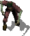
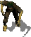
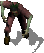
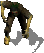

 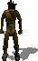
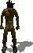

 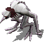
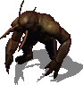
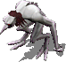
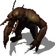


 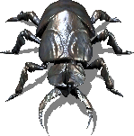
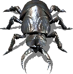


 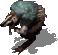
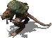
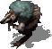
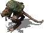


 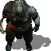
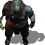


 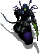
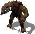
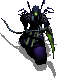
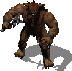


 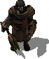
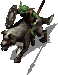
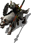
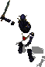
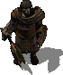
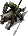
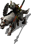
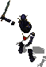
 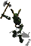
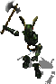
 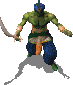
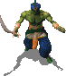
 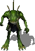
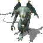
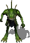
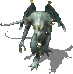


 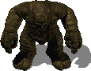
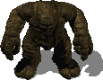


 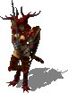
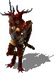


 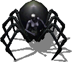
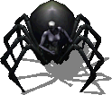


 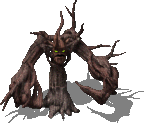
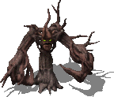


 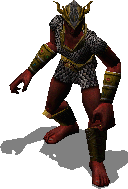
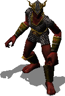
 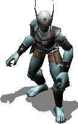
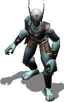


 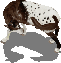
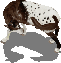


 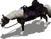
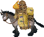
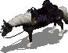
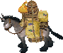


 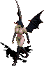
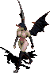
 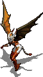
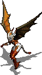
 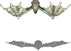
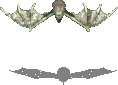

 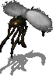
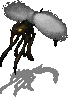

 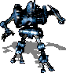
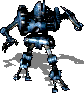